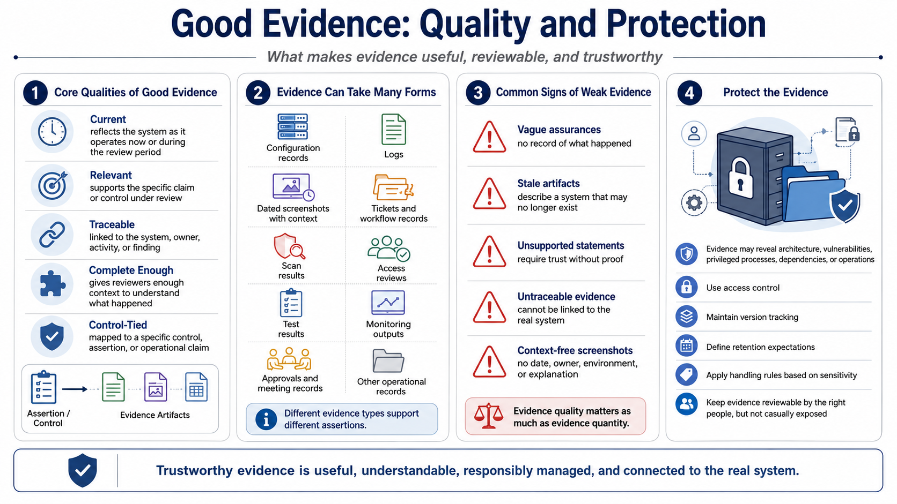

What Counts as Good Evidence?
Connecting to LMS... Progress: in progress

Narration
Good evidence is current, relevant, traceable, complete enough, and tied to a specific control or assertion. Current evidence reflects the system as it operates now or during the period being reviewed. Relevant evidence supports the specific claim under review. Traceable evidence can be connected back to the system, component, owner, control, finding, or operational activity. Complete enough means the evidence lets a reviewer understand what happened without guesswork.
Evidence can take many forms. Configuration records can show how systems are set up. Logs can show activity. Screenshots can be useful at a high level when they are dated, contextualized, and tied to a system state. Tickets can show workflow, ownership, and closure. Scan results can show vulnerability status. Meeting records, approvals, access reviews, test results, monitoring outputs, and operational records can all support different kinds of assertions.
Weak evidence creates friction. Vague assurances do not show what happened. Stale artifacts may describe a system that no longer exists. Unsupported statements ask reviewers to trust without a record. Evidence that cannot be tied back to the system may be impossible to evaluate. A screenshot with no date, owner, environment, or explanation may create more questions than it answers. Evidence quality matters as much as evidence quantity.
Good evidence is also protected. Security documentation can reveal architecture, configuration, vulnerabilities, privileged processes, dependencies, and operational practices. Evidence repositories need access control, version tracking, retention expectations, and handling rules appropriate to sensitivity. Evidence should be reviewable by the right people, but it should not be casually exposed. Trustworthy evidence is useful, understandable, and responsibly managed.